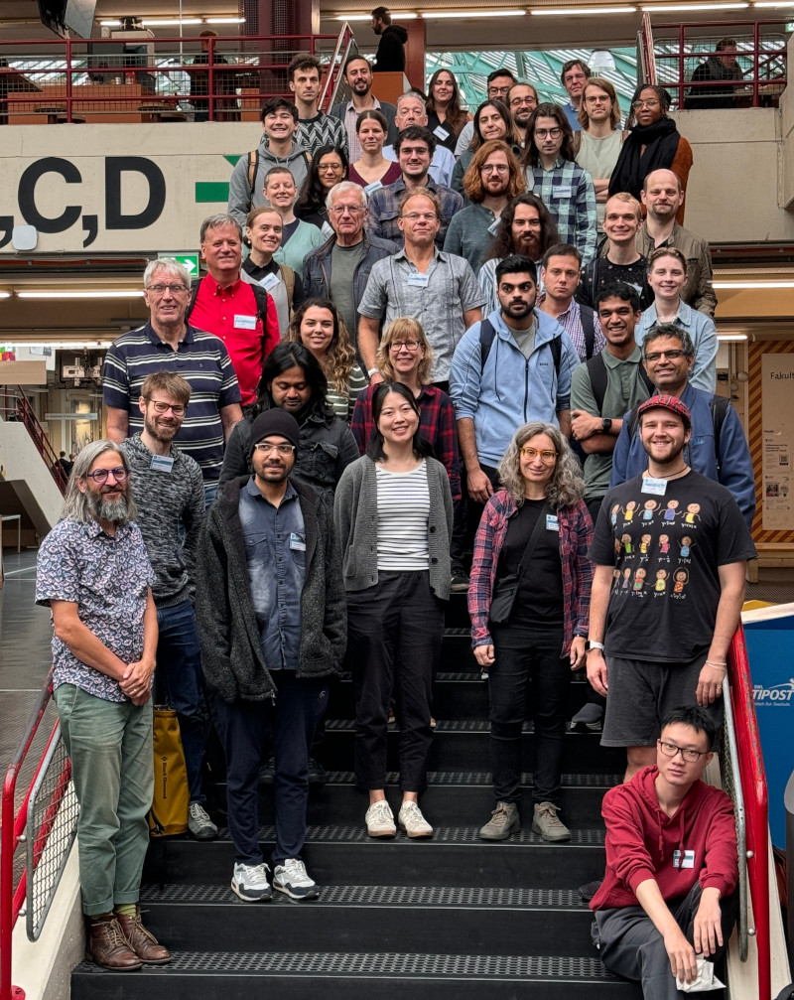
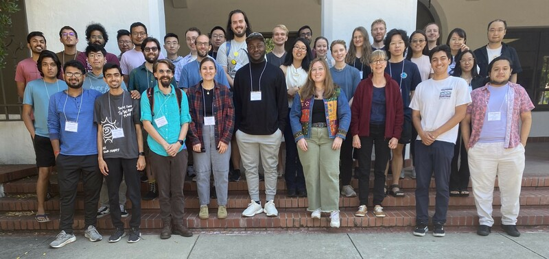
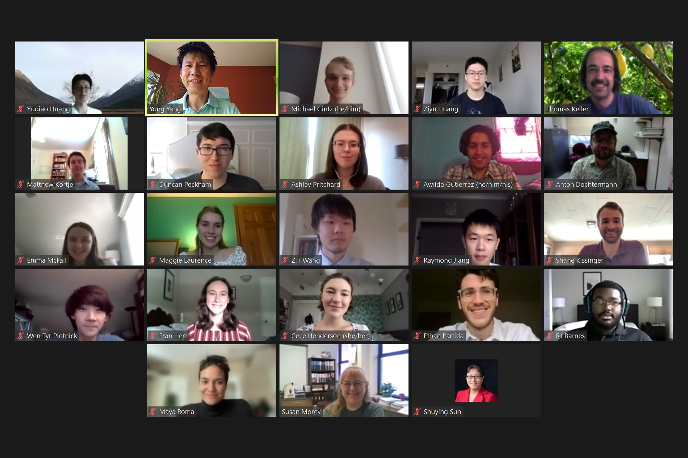
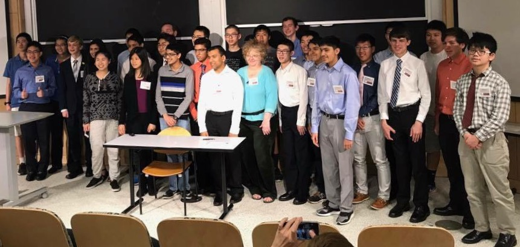

More serious:
Education:
2026.
University of Illinois Chicago. PhD in mathematics. Advised by
Kevin Tucker.
2022.
Princeton University. AB in mathematics and certificate in linguistics.
Works:
2026. Koszul Complexes, Local Cohomology, Universal Resolutions, and Cohomological Support Varieties (
PDF). My doctoral thesis.
2026. Cohomological support varieties of certain monomial ideals (
PDF).
arXiv.
2026. Koszul cohomology and support of local cohomology modules of complete intersections.
J. London Math. Soc., 113: e70466. Co-authored with
Wenliang Zhang.
Awards:
2026.
Herbert Alexander Award.
Talks, conferences, and workshops:
2024.
Betti numbers in commutative algebra and equivariant homotopy theory (pictured). Workshop at the University of Bielefeld.
2024.
Multigraded and differential graded methods in commutative algebra (pictured). Workshop organized by SLMath.


Programs and projects I participated in or contributed to:
2023-2025.
Algebra, Geometry, and Topology at UIC. A research training group awarded NSF grant #2037569 under the NSF RTG program with principal investigator
Izzet Coskun and co-principal investigators
Lawrence Ein,
Daniel Groves,
Kevin Tucker, and
Julius Ross.
2024.
Local Cohomology, de Rham Cohomology and D-modules. A project awarded NSF grant #1752081 under the NSF CAREER program with principal investigator
Wenliang Zhang.
2021.
Algebra, Combinatorics, and Statistics (pictured). REU site at Texas State University.

Less serious:
Works:
2022. Two approaches to the class field tower problem (
PDF). My undergraduate senior thesis. Advised by
Christopher Skinner.
2022. Conscious differentiation and the preservation of Gullah (
PDF). Independent work for my undergraduate certificate in linguistics. Advised by
Laura Kalin.
2021. Configuration spaces and representation stability (
PDF). My undergraduate junior paper. Advised by
Amitesh Datta.
2020. Visually ordering ideals by inclusion (
PDF). A handout.
2019. Breaking bad RSA encryption (
PDF). A collection of handouts for a one-week class I taught at
Canada/USA Mathcamp.
2018. Classifying graph Lie algebras (
PDF). A paper written for the 2017 PRIMES-USA program.
Talks, conferences, and workshops:
2026. Koszul Complexes, Local Cohomology, Universal Resolutions, and Cohomological Support Varieties (
slides). My thesis defense.
2022. Square factors in projective character degrees (
poster).
AMS-PME Student Poster Session at JMM 2022. I presented findings from the 2021 REU site at Texas State University.
2021. Square factors in projective character degrees (
video,
slides).
Young Mathematicians Conference. I presented findings from the 2021 REU site at Texas State University.
2019. Applications of modular arithmetic (
slides). PUMaC China, a Chinese satellite of
PUMaC, a math competition for high school students. I gave a talk.
2018. Classifying graph Lie algebras (
poster).
MAA Student Poster Session at JMM 2018. I presented findings from the 2017 PRIMES-USA program.
2017. Classifying graph Lie algebras (
slides).
PRIMES Conference (pictured). I presented findings from the 2017 PRIMES-USA program.

Programs and projects I participated in or contributed to:
2020.
Summer program for mathematics majors. Research program at Princeton University.
2017.
PRIMES-USA. Research program at MIT.
Contest results:
2018. Putnam Competition. 17/42
2017. USAMO. 17/42
2017. USAJMO. 19/42
2017. USAMO. 17/42
2017. USAMO. 17/42
2017. USAMO. 17/42